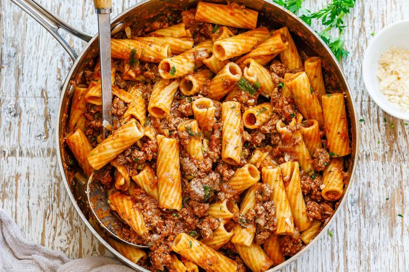

Crack for gains or whatever

Ground Beef Pasta with Tomato Sauce
This is the easiest meal to make! It is protein packed and perfect for fueling after the gym!
Ingredients
- 1 lb ground beef
- 1 medium onion
- 3 cloves garlic minced
- 5 basil leaves chopped
- 1 can marinara sauce
- 1 tbsp tomato paste
- 1 tbsp red pepper flakes
- 1 tbsp salt
- 2 tsp black pepper
- 1 tbsp italian seasoning
- 1 tbsp unsalted butter
- 1 tbsp olive oil
- 3 tbsp grated parmesan
- 8 oz chickpea rigatoni pasta
Instructions
- Bring salted water to boil in large pot. Cook pasta for 7 mins.
- Heat up pan and drizzle olive oil. Cook ground beef for 4 mins or until cooked. Season with salt and pepper.
- Add minced garlic and chopped onions. Throw in butter, pepper flakes, and italian sesasoning.
- Stir in marinara sauce and tomato paste. Add in a bit of water to dilute the paste. Bring to simmer and add in basil leaves. Stir occasionally for 8 mins.
- Adjust seasoning with salt and pepper. Add in pasta and stir.
- Add in grated parmesan until melted. Serve and enjoy!!